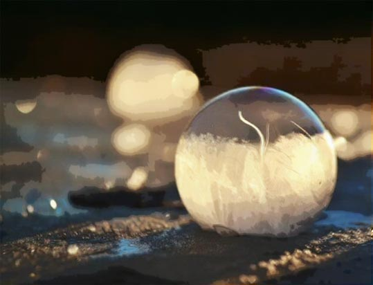

你的审美性格画像：水晶球
极度简洁甚至性冷淡风最适合你，或者准确说它们对你而言是最保险的一种美。比如意大利“画僧”、作品完全没一点“人味儿”的莫兰迪。

极度简洁甚至性冷淡风最适合你，或者准确说它们对你而言是最保险的一种美。比如意大利“画僧”、作品完全没一点“人味儿”的莫兰迪。
你的美学天敌是过度，美对你而言最重要的除了适可而止、还有过犹不及。任何领域哪怕一点过度和越位，都会让你不适。形式大于意义的艺术对你干脆是没有意义的。
在美学上你是个极度挑食的人，因为你擅长发现各种不合理和荒谬。“美得有意义”对你很重要。
但你的审美基调依然是开明而自由的。对于你而言，事物天然而有缺陷也强过人造的所谓完美。
一成不变的艺术不适合你，唯一适合你的只有变化这件事本身。
具备这样的美学性格的你，恐怕不会很合群、偶尔也难免给别人带来困扰。但你在众人眼中是个可爱的存在，因为虚伪就是你的反义词，而单纯通透就是你人格魅力的核心。
意大利著名的版画家、油画家，以静物画著称，创造出一种近乎抽象的、取消具体形象的绘画。
中国画一代宗师，擅书画，水墨写意为主，笔致简洁，能诗文，用墨极少。